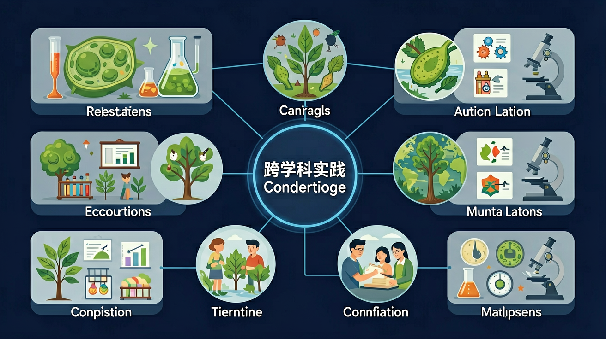

整合初一生物全年知识，连接数理化地各学科

🎯 能说出光合作用的基本原料和产物
🎯 能判断显微镜下植物细胞与动物细胞的主要区别
🎯 能分析食物链中能量流动的路径
生命的基本单位
生物+化学生长与繁殖的基础
生物+数学科学观察工具
生物+物理最大的生态系统
生物+地理生物与环境的关系
生物+地理能量流动
生物+物理+数学生物与非生物环境
生物+化学被子植物繁殖器官
生物+化学双受精与种子形成
生物+数学藻苔蕨裸被
生物+地理+化学扦插嫁接压条
生物+农业受精与胚胎发育
生物+化学❓ 为什么植物要晒太阳才能长大？
❓ 显微镜下细胞为啥长得不一样？
❓ 吃进去的饭到底怎么变成能量的？
学完这一课，这些问题你都能自信地回答。
光合作用需要的原料是？
细胞能量转换器是？
调查校园中的植物种类，统计不同类群数量，绘制分布图，分析与环境因素的关系。
检测水体中氮、磷含量，观察藻类生长情况，分析人类活动对水体生态系统的影响，提出治理方案。
控制光照强度、温度、CO₂浓度等变量，观测植物产氧量，绘制影响曲线，理解生态系统能量转化。
利用数学函数描述细胞分裂的指数增长，预测细胞数量，理解肿瘤细胞无限分裂的危害。
用思维导图拆解光合作用三阶段
结合化学方程式说明物质转化
对比叶绿体与线粒体能量转换差异
用显微镜观察洋葱表皮细胞结构
设计阳台植物补光实验方案
关于水体氮磷循环的正确理解是？
根据提供的6个采样点水质数据表（含溶解氧、pH、氨氮等指标），找出关键环境因子
将下列生物现象拖入对应的跨学科领域
1. 研究一片森林生态系统中，蘑菇（真菌）在物质循环中的作用，需要哪些学科知识？（ ）
2. 下面哪个问题是生物学与数学的最佳结合点？（ ）
3. 利用信息技术分析基因序列数据，研究物种亲缘关系，这种研究方法体现了哪种思维？（ ）
4. 以下哪组问题最能体现"生物学+地理学"的跨学科融合？（ ）
先独立作答，再点选项查看对错与错因。
生态池东侧采样点检测到磷酸盐含量显著偏高，最可能的原因是？
要准确比较不同采样点的藻类密度，最科学的做法是？
改善水体富营养化最根本的措施是？
检测溶解氧时，发现____（仪器名称）的读数随时间持续下降，说明水中微生物在消耗氧气。
答案：溶解氧测定仪
该仪器专门用于测量水中溶解氧含量
对比藻类显微镜照片时，需要保持相同的____倍数才能客观比较数量差异。
答案：放大
放大倍数是显微观察的基础参数
✅ 仅植物/真菌/细菌有细胞壁
💡 显微镜下细胞壁结构易混淆
✅ 活细胞时刻进行呼吸作用
💡 与光合作用时间特征混淆
口诀：光水二氧化碳，淀粉氧气叶里造
类比：叶绿体像绿色工厂，阳光是免费的电
中考真题：森林生态系统能量根本来源是？
迁移题：冬季大棚种植可采取？
显微镜视野调暗应调节？